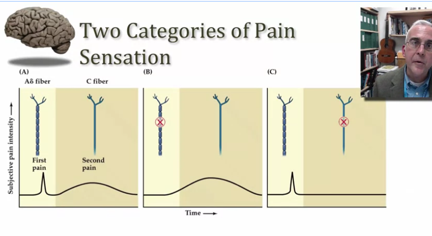

Fast pain, slow pain, and the experience of a variable expanded in a biological function basis.

This is an image from a Coursera Medical Neuroscience course representing the response properties of two different neuron types, one responsible for fast pain and the other for slow pain. The two types of neurons appear to be bump-shaped basis functions for the experience of pain. What we experience is the expansion of a variable (pain) in a biological function basis. At the other side of a sensory coding operation is another layer of neurons that decodes it. Synaptic weights on the input of a neuron are literally projection weights that read out measurements or dimensions of input neural activity. These encode-decode transformations form long chains and they can loop back on themselves (recurrence). They are so dense that they are almost continuous, but between different neurons are tiny gaps—synapses—that are probabilistic. The synapse is a low-pass filter. I can't sleep tonight.
Voici une image tirée du cours Medical Neuroscience de Coursera, représentant les propriétés de réponse de deux types différents de neurones : l'un responsable de la douleur rapide, l'autre de la douleur lente.
Ces deux types de neurones semblent être des fonctions de base en forme de bosse pour l'expérience de la douleur. Ce que nous ressentons serait alors l'expansion d'une variable — la douleur — dans une base fonctionnelle biologique.
De l'autre côté d'une opération de codage sensoriel se trouve une autre couche de neurones qui la décode. Les poids synaptiques à l'entrée d'un neurone sont littéralement des poids de projection qui lisent des mesures ou des dimensions de l'activité neuronale entrante.
Ces transformations d'encodage et de décodage forment de longues chaînes, et elles peuvent se reboucler sur elles-mêmes — c'est la récurrence. Elles sont si denses qu'elles sont presque continues, mais entre les différents neurones se trouvent de minuscules espaces : les synapses, qui sont probabilistes.
La synapse est un filtre passe-bas.
Je n'arrive pas à dormir ce soir.